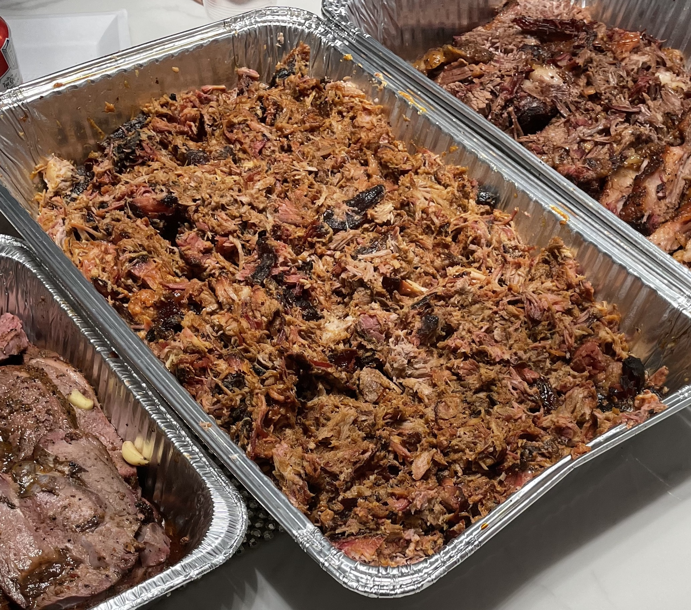

Brisket

Ingredients
- BEEf
- BEER
- ONION
- GARRIC
- HERBS
How to cook
- Sear the brisket first. Sear the brisket all over to caramelize the meat and develop flavor before slow cooking it
- Submerge the brisket in liquid and add aromatics
- Bring the liquid to a boil, then reduce to a simmer
- Cover and transfer to a 225 degrees F oven. Now walk away! After 3 hours, start testing with a paring knife or fork to see if it's falling apart tender